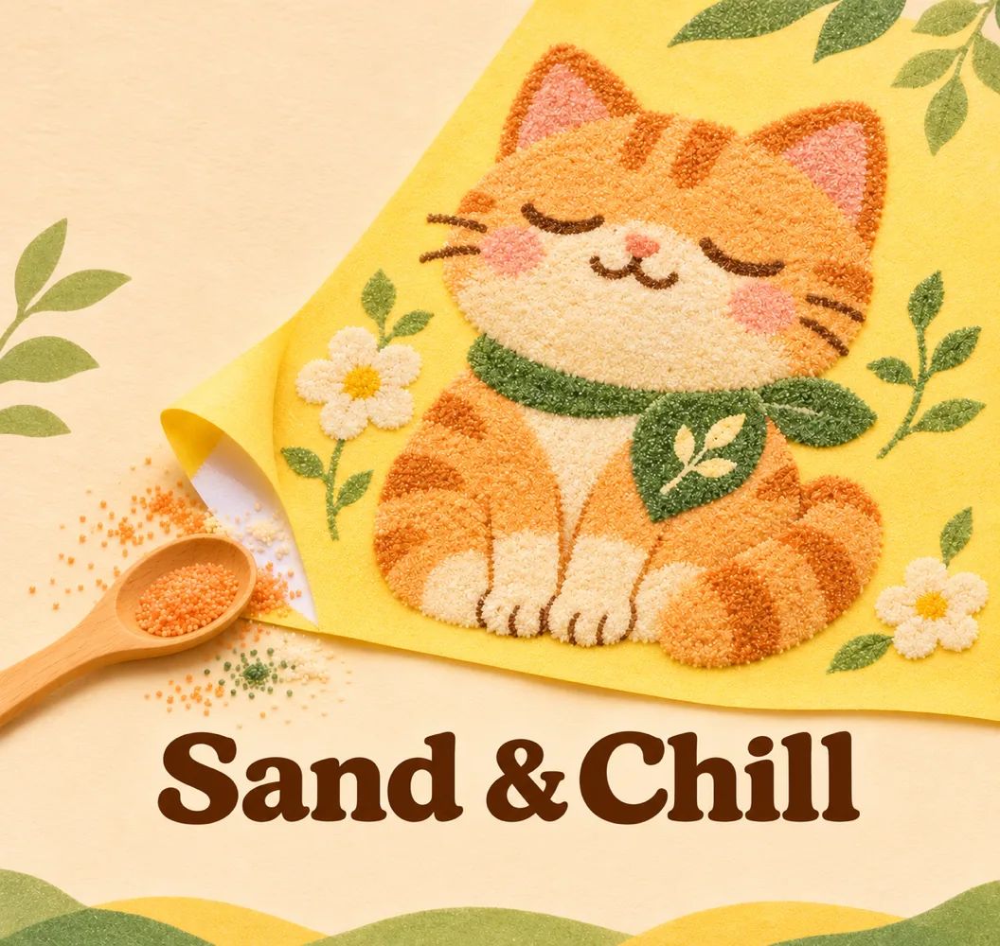

預覽區
未上架的遊戲骨架，僅供內部試玩。不在大廳、不計點數、不送 GA4、不被搜尋引擎收錄。
- 骨架泡泡戳戳泡泡從海底浮起，點破它們；漏掉 3 顆就結束，看你能撐多久。
- 試玩中便便鳥大戰狼群 新美術套用新角色與三種場景、手機全螢幕的便便鳥試玩版，玩法與正式版相同。
- 試玩中偷偷下班 · 巡邏試玩可直接挑戰第 5、8、12 至 14 關，試玩遮蔽物、保全巡邏與輪替配置。
- 已上架貓貓三消交換貓咪與玩具、完成收集目標，無限接關的療癒三消。
- 骨架偷吃餅乾趁主管轉頭，一片一片偷吃餅乾，吃完一包就過關
- 已上架TOP DOGGO: Paw City已上架為 TOP DOGGO: Paw City（games/top-doggo）。這是上架前的骨架，保留作玩法參考。

已上架沙沙時光 Sand & Chill自由撕紙、混色倒沙，傾斜與工具讓真實顆粒慢慢沾附的療癒沙畫。- 已上架行人地獄：我只是想買珍奶騎樓被機車和攤販塞滿，只好繞到馬路上。滑動閃避，活著走到珍奶店。
- 已上架貓咪連連看 Meow Link奶油色貓咪連連看，沿用 Ocean Link 的十關連線玩法。
- 已上架夜航經典接龍 Midnight Klondike已上架；保留不接錢包、GA4 與排行榜的獨立玩法預覽。
- 已上架星軌新接龍 Orbit FreeCell已上架；保留不接錢包、GA4 與排行榜的獨立玩法預覽。